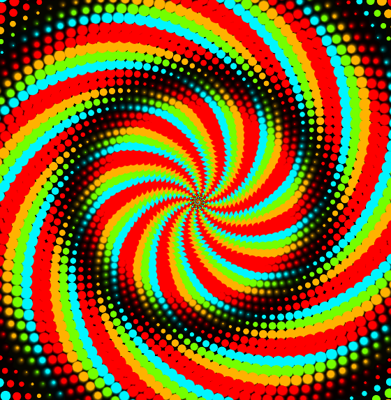
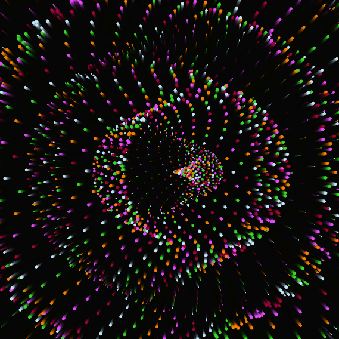

Experiment 3 - Generative Art
Imitate
The code that I started with came from cloud.cb on the website openprocessing
https://openprocessing.org/sketch/1935497
Integrate
To extend the code I added a new spin pattern and I implemented a color wheel
Innovate
To innovate this code, I ended up making several different color pallets, so that each time the program was ran it was a different color
I then realized that this program wasnt interactive enough, so i added the ability to cycle through different pallets by clicking the mouse
I then added a trail effect to give the art a nice 3d-ish effect
I then added a new mode, where if you press SPACE the rings start to move in a sine wave motion
I then added new movement where it takes all the loops and moves them as one plane in a sine wave motion
Reflection
I worked on the whole project, starting with code from cloud.cb on openprocessing. Using that as a base, I made something cool and unique that feels like my own.
Looking back, I think I did a good job. I put thought and effort into both the code and coming up with fun ideas.
Upon gaining a clear vision of the direction I intended for the sketch, the process became exceptionally enjoyable. It was a rewarding experience to see my conceptual ideas transform into tangible forms as I diligently worked on the code, bringing the envisioned outcome to life.
Results
press SPACE for new mode
TAP mouse for color change
MOVE mouse to grow/shrink circles